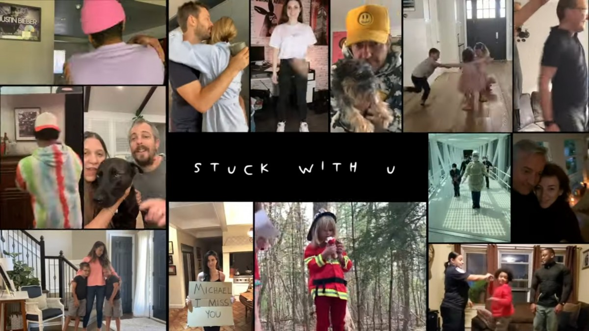
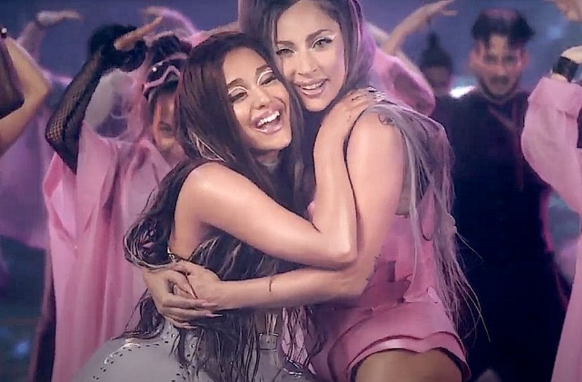

Your daily dose in art 💕 We serve you a great taste in music, movies, and books!
Marathon a movies?🎬 Don't miss the preview before watch them!
Boost up your day with our music picks! 🎧🌈🌈
Wondering what to read?📖 We'll bring you the list!
Get to know us! Read down below to sip some tea
Feel free to give some critics and suggestions for next blog development!
Stuck With You by Ariana Grande and Justin Bieber
Lagu ini bermakna tentang seseorang yang akhirnya menemukan tambatan hatinya, dan tidak ingin lagi mencari yang lain apapun yang terjadi, karena merasa sudah bertemu dengan yang paling tepat untuknya.
Stuck With U sendiri memiliki arti “Terjebak denganmu” yang biasanya konotasinya negatif, tapi tidak di lagu ini, karena bertema karantina / lockdown, justru makna “terjebak” di sini menjadi romantis karena pasangan itu bisa menghabiskan waktu bersama lebih lama.

Rain On by Me by Lady Gaga and Ariana Grande
Lagu ini bercerita tentang seseorang yang menghadapi masa-masa sulit dalam hidupnya. Segala cobaan dan tantangan disimbolkan sebagai hujan yang terus-menerus mengguyur selama kita hidup. Kalau kita tahu ada seseorang yang kita kenal lagi di masa-masa sulit seperti itu, ada baiknya kita menjadi wadah untuk mereka menuangkan segala keluh kesah mereka.

Ariana Grande Butera, (lahir 26 Juni 1993) adalah seorang penyanyi, penulis lagu, dan aktris asal Amerika Serikat. Dia memulai kariernya pada tahun 2008 di drama musikal Broadway berjudul 13, sebelum memerankan Cat Valentine di serial televisi Nickelodeon Victorious (2010–2013) dan di spinoff Sam & Cat (2013–2014).Dia juga pernah tampil di berbagai teater dan peran televisi dan telah mengisi suara dibeberapa serial televisi dan film.
Berikut playlist dari Ariana Grande yang sudah kami pilih. Happy listening!
(Rate : 95/100)
(Rate : 92/100)